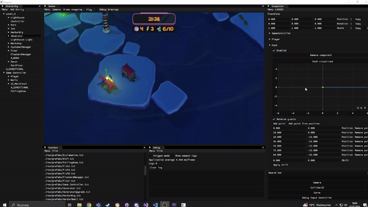

Guiding Light
You're a lighthouse keeper and a courier… at once. Operate alone at the Pole of Cold, feed the penguins, guide the ships, and upgrade your lighthouse before the polar night claims you.
About the game
Guiding Light is a casual time-management game developed alongside its own game engine as part of coursework at the Lodz University of Technology. Set on a lonely arctic island, the player juggles the duties of a lighthouse keeper and a supply courier — rotating the lighthouse beam to steer ships away from rocks, picking up food deliveries, and keeping a colony of penguins fed, all while managing upgrades before the polar night rolls in.
The game was built over four months by a team of eight, including four programmers. I was the design lead of the project, I was the design lead for this project, from creating the initial idea, through iterating multiple prototypes, tweaking parameters, and finally reimplementing most of the gameplay from the prototype in our custom engine. The game won both the main Game Development category and the Activision special prize at ZTGK 2024 — a national Polish student game development competition.
Screenshots

The Engine
One of the great features of the Lodz University of Technology curriculum is that, during the sixth semester, students are organized into teams and undertake a semester-long project to develop their own game engine and build a game using it.
We've built our Engine from scratch in modern C++23. The architecture follows a Unity-style Object-Component model. The graphics API started as OpenGL but was ported to DirectX 11 early-development. A custom Python-based header tool — inspired by Unreal's UnrealHeaderTool — generates serialization and deserialization code for all components by parsing C++ headers automatically.
- 2D physics engine (collision detection & resolution)
- Runtime prefab loading
- UI system
- Scene and prefab editor
- Resource Manager (shared models & textures & shaders)
- Input and Event systems
- Custom EngineHeaderTool (Python, codegen)
- Shader hot-swapping

Custom editor — gizmos, curve editors, debug drawings, and component inspectors.Rendering
The renderer uses deferred shading for opaque geometry, switching to forward rendering for transparent objects and UI. A range of real-time rendering techniques were implemented to achieve the game's cold, moody arctic atmosphere.
- Gerstner wave water geometry
- Screen Space Reflections (SSR)
- Shadow mapping (point lights)
- Particle systems (CPU)
- Percentage-Closer Soft Shadows
- Volumetric light scattering
- Screen Space Refraction
- SSAO
- FXAA
- Deferred + forward hybrid pipeline
My Contributions
I was the lead designer on the project, but also served as a programmer, contributing to the engine, game systems, and gameplay. Most of the additions, systems, and tools I created arose from the need to use them as a designer and to reimplement gameplay from previously prepared prototypes in our engine.
Engine Programming
Engine Header Tool - A system inspired by Unreal's Unreal Header Tool, written in Python. This tool automatically creates editor, serialization, and deserialization code for components and their public variables. The script uses regex to detect, create, and remove appropriate code fragments. The automatically created code was backward compatible, meaning it ignored newly added variables during deserialization. The script runs every time the game project is built.
Paths and Curves - Data structures and tools for modifying them, inspired by similar tools from the GameMaker engine. These tools allow for convenient modification of points in a path or curve. They were used to define the paths along which ships were created in the game, the camera traversed when changing level, and the curves were used to scale the difficulty level, lighthouse development, and so on.
Level Creation Tools - They allow the creation of floes with different appearances but with sizes determined by the designer, as well as the automatic placement of objects marking the ends of the loading bay.
Tools and keyboard shortcuts to make using the editor easier:
- F2 to rename
- ctrl+D to copy entity
- Del to delete entity
- Controlling the camera
- A system for assigning custom names to components (e.g. to distinguish several different curves in one object)
- Searching for components by name
- automatic segregation of assets into tabs depending on type (models, textures, sounds, scenes, prefabs)
- LMB to load scenes and prefabs and ctrl+LMB to additively load
The foundations for the UI system.
Systems Programming
Generative system - It allows for the creation of events that spawns specific ships on maps, so that subsequent ship appearances are neither entirely random nor predictable, and each player has a unique, yet similar, planned experience. The designer can create pools and designate which ships will appear in a given pool, whether the pool will create them sequentially, randomly, or all at once. Additionally, when the system detects that a player is a few points short of the winning of the level, it spawns the calculated number of ships of the appropriate size to complete the level.
Ship AI system - A state machine that organizes the ships logic code into specific states: sailing forward, avoiding an obstacle, following the light, pirating, etc.
Tutorial event system - It allows to create stages that guide the player through the tutorial. The user assigns specific events for a given stage: dialogue, sound, prompt, creation of a specific ship, etc., as well as a condition for its fulfillment, such as collecting a specific cargo, entering a lighthouse, etc. The system checks whether the player has met the required condition and then proceeds to the next stage by activating the appropriate events.
Gameplay Programming
One of my main responsibilities was to reimplement the mechanisms I had previously created in the prototype on the GameMaker engine:
- The movement of the lighthouse keeper
- Ship Logic and Their Interaction with Light
- Ship spawning
- Collecting cargos
- Flash skill
- Upgrading the lighthouse
- Implementation of most models and textures
- etc.
Game Design
Robiłem design
Level Design
Robiłem poziomy
I also contributed to: Engine Prog. Systems Prog. Gameplay Prog. — to learn more switch to Programming
I also contributed to: Game Design Level Design — to learn more switch to Design
Credits
| Miłosz Kawczyński | Design Lead |
| Michał Galiński | Production Lead |
| Jakub Januszewicz | 2D & Branding Lead |
| Nadia Kowalska | 3D Art Lead |
| Hubert Olejnik | Rendering Lead |
| Mikołaj Przybylski | Engine Programming Lead |
| Julian Rakowski | Voice Acting |
| Michał Świstak | Sound Design |